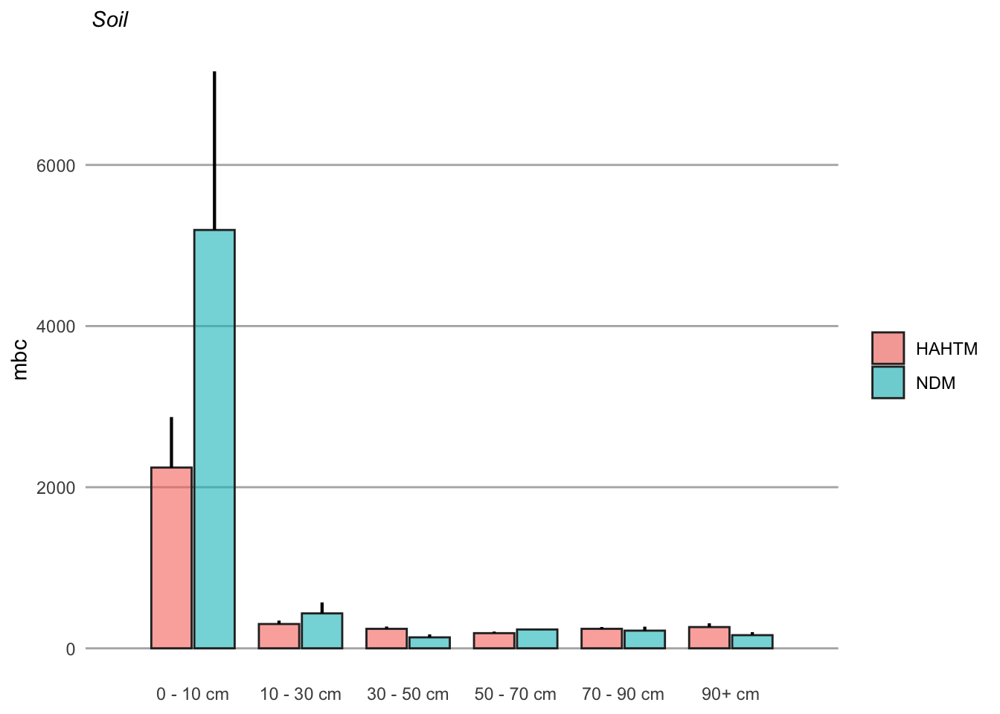
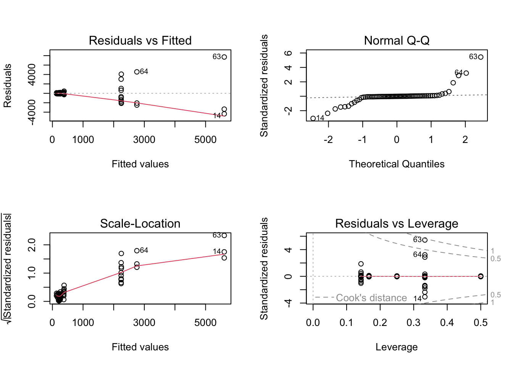
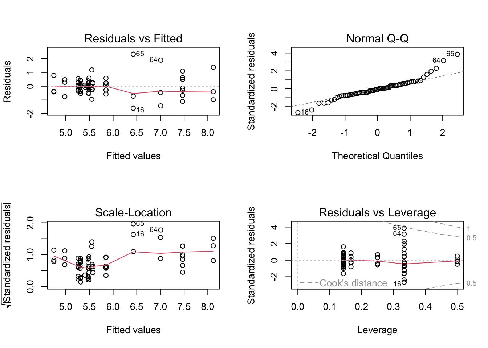
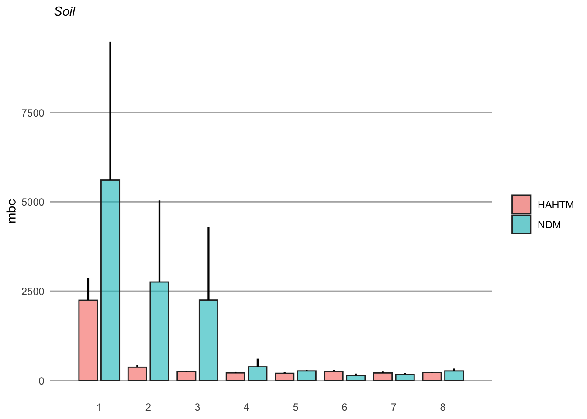
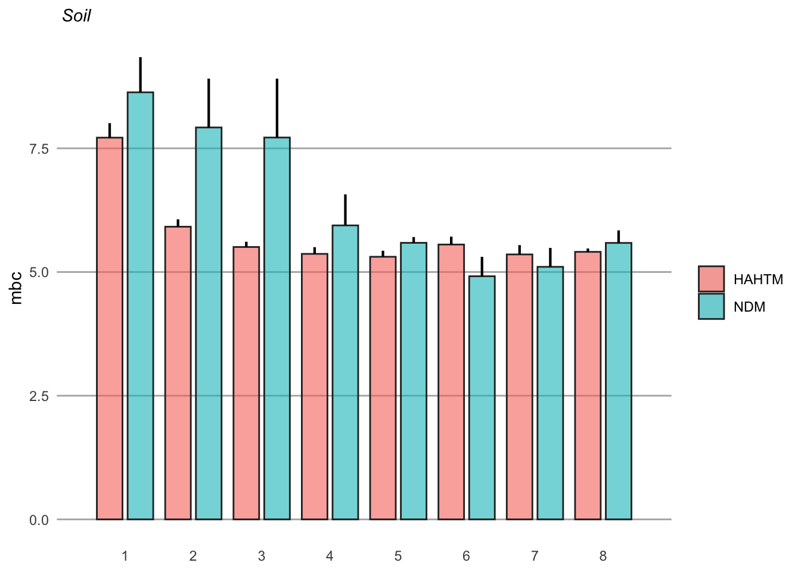
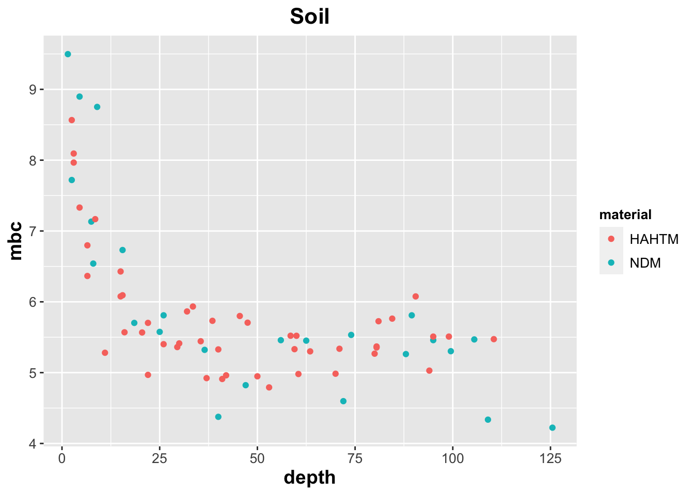
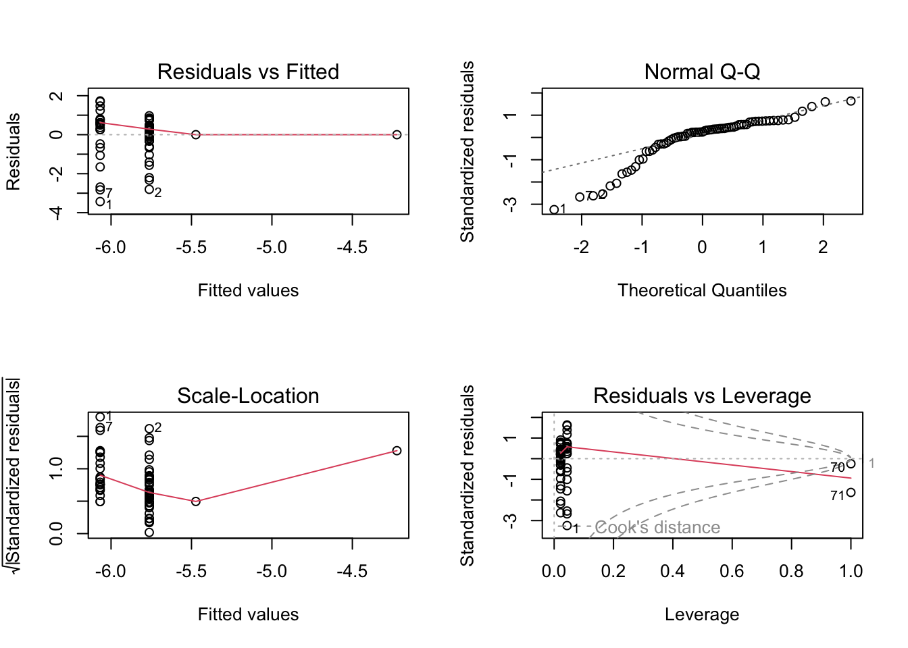
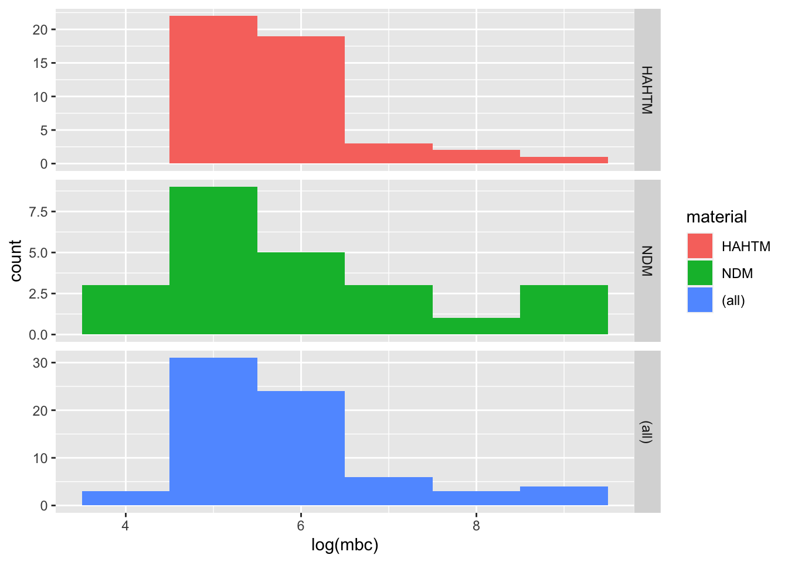

soil_full <- read.csv('soil_full.csv') %>%
as_tibble()Soil
soil_full# A tibble: 71 × 5
material range depth range_mean mbc
<chr> <chr> <dbl> <chr> <dbl>
1 NDM 0-3 1.5 0-10 13323.
2 HAHTM 0-5 2.5 0-10 5251.
3 NDM 0-5 2.5 0-10 2253.
4 HAHTM 0-6 3 0-10 3274.
5 HAHTM 0-6 3 0-10 2881.
6 HAHTM 0-9 4.5 0-10 1527.
7 NDM 6-Mar 4.5 0-10 7314.
8 HAHTM 0-13 6.5 0-10 896.
9 HAHTM 0-13 6.5 0-10 581.
10 NDM 0-15 7.5 0-10 1252.
# ℹ 61 more rowssoil_summary <- read.csv('soil_full.csv') %>%
as_tibble() %>%
mutate_at(vars(material, range, range_mean), factor) %>%
group_by(material, range_mean) %>%
dplyr::summarize(mean = mean(mbc),
sd = sd(mbc),
n = n(),
se = sd/sqrt(n)
) %>%
mutate(se = sd / sqrt(n),
lower.ci = mean - qt(1 - (0.05 / 2), n - 1) * se,
upper.ci = mean + qt(1 - (0.05 / 2), n - 1) * se)`summarise()` has grouped output by 'material'. You can override using the
`.groups` argument.soil_summary# A tibble: 12 × 8
# Groups: material [2]
material range_mean mean sd n se lower.ci upper.ci
<fct> <fct> <dbl> <dbl> <int> <dbl> <dbl> <dbl>
1 HAHTM 0-10 2244. 1659. 7 627. 710. 3778.
2 HAHTM 10-20 302. 141. 11 42.4 207. 396.
3 HAHTM 30-50 242. 94.8 11 28.6 178. 306.
4 HAHTM 50-70 188. 52.0 7 19.7 140. 237.
5 HAHTM 70-90 242. 55.0 6 22.5 185. 300.
6 HAHTM 90+ 264. 104. 5 46.4 135. 393.
7 NDM 0-10 5193. 4823. 6 1969. 131. 10254.
8 NDM 10-20 434. 271. 4 136. 2.34 865.
9 NDM 30-50 136. 63.5 3 36.6 -21.4 294.
10 NDM 50-70 234. 1.06 2 0.749 224. 243.
11 NDM 70-90 220. 98.8 4 49.4 62.4 377.
12 NDM 90+ 164. 84.5 5 37.8 58.6 268.x_labels = c("0 - 10 cm", "10 - 30 cm", "30 - 50 cm", "50 - 70 cm", "70 - 90 cm", "90+ cm")soil.barplot <- ggplot(soil_summary, aes(x = range_mean, y = mean, fill = material)) +
geom_bar(stat = "identity", position = position_dodge(width = 0.8), width = 0.75, color = "#2b2b2b", linewidth = 0.50, alpha = 0.6) +
geom_linerange(aes(ymin = mean, ymax = mean + se), position = position_dodge(width = 0.8), linewidth = 0.75) +
scale_x_discrete(expand = c(0, 1), labels = x_labels) +
ggtitle(expression(paste(italic(" Soil")))) +
ylab(expression(paste("mbc"))) +
labs(x = NULL) +
theme(strip.text = element_text(size = 10, color = "black", hjust = 0.50),
strip.background = element_rect(fill = "#FFFFFF", color = NA),
panel.background = element_rect(fill = "#FFFFFF", color = NA),
panel.grid.major.x = element_blank(),
panel.grid.minor.x = element_blank(),
panel.grid.minor.y = element_blank(),
panel.grid.major.y = element_line(color = "#b2b2b2"),
panel.spacing.x = unit(1, "cm"),
panel.spacing.y = unit(0.5, "cm"),
panel.spacing = unit(1, "lines"),
axis.ticks = element_blank(),
legend.position = "right",
plot.title = element_text(size = 11),
axis.title.y = element_text(size = 11),
legend.title = element_blank())soil.barplot
Soil Main File - Numbered categories for depth
soil_main <- read.csv('soil_main.csv') %>%
as_tibble() %>%
mutate_at(vars(material, depth_cat), factor) %>%
group_by(material, depth_cat) %>%
dplyr::summarize(mean = mean(mbc),
sd = sd(mbc),
n = n(),
se = sd/sqrt(n)
) %>%
mutate(se = sd / sqrt(n),
lower.ci = mean - qt(1 - (0.05 / 2), n - 1) * se,
upper.ci = mean + qt(1 - (0.05 / 2), n - 1) * se)`summarise()` has grouped output by 'material'. You can override using the
`.groups` argument.soil_main# A tibble: 16 × 8
# Groups: material [2]
material depth_cat mean sd n se lower.ci upper.ci
<fct> <fct> <dbl> <dbl> <int> <dbl> <dbl> <dbl>
1 HAHTM 1 2244. 1659. 7 627. 710. 3778.
2 HAHTM 2 371. 144. 7 54.6 237. 504.
3 HAHTM 3 246. 65.7 7 24.8 185. 307.
4 HAHTM 4 214. 72.3 7 27.3 147. 281.
5 HAHTM 5 202. 69.5 7 26.3 138. 266.
6 HAHTM 6 259. 105. 6 42.7 149. 368.
7 HAHTM 7 212. 79.1 4 39.5 86.0 338.
8 HAHTM 8 223. 21.4 2 15.1 31.0 415.
9 NDM 1 5609. 6699. 3 3868. -11032. 22250.
10 NDM 2 2757. 3953. 3 2282. -7062. 12576.
11 NDM 3 2249. 3529. 3 2038. -6518. 11015.
12 NDM 4 381. 400. 3 231. -612. 1374.
13 NDM 5 268. 57.0 3 32.9 126. 409.
14 NDM 6 136. 101. 3 58.3 -114. 387.
15 NDM 7 165. 86.0 3 49.7 -48.9 378.
16 NDM 8 267. 93.7 2 66.3 -575. 1109.x_labels = c("1", "2", "3", "4", "5", "6", "7", "8", "9")soil_main.barplot <- ggplot(soil_main, aes(x = depth_cat, y = mean, fill = material)) +
geom_bar(stat = "identity", position = position_dodge(width = 0.9), width = 0.75, color = "#2b2b2b", linewidth = 0.50, alpha = 0.6) +
geom_linerange(aes(ymin = mean, ymax = mean + se), position = position_dodge(width = 0.9), linewidth = 0.75) +
scale_x_discrete(expand = c(0, 1), labels = x_labels) +
ggtitle(expression(paste(italic(" Soil")))) +
ylab(expression(paste("mbc"))) +
labs(x = NULL) +
theme(strip.text = element_text(size = 10, color = "black", hjust = 0.50),
strip.background = element_rect(fill = "#FFFFFF", color = NA),
panel.background = element_rect(fill = "#FFFFFF", color = NA),
panel.grid.major.x = element_blank(),
panel.grid.minor.x = element_blank(),
panel.grid.minor.y = element_blank(),
panel.grid.major.y = element_line(color = "#b2b2b2"),
panel.spacing.x = unit(1, "cm"),
panel.spacing.y = unit(0.5, "cm"),
panel.spacing = unit(1, "lines"),
axis.ticks = element_blank(),
legend.position = "right",
plot.title = element_text(size = 11),
axis.title.y = element_text(size = 11),
legend.title = element_blank())soil_main.barplot
soil_full <- read.csv('soil_full.csv') %>%
as_tibble()soil_full# A tibble: 71 × 5
material range depth range_mean mbc
<chr> <chr> <dbl> <chr> <dbl>
1 NDM 0-3 1.5 0-10 13323.
2 HAHTM 0-5 2.5 0-10 5251.
3 NDM 0-5 2.5 0-10 2253.
4 HAHTM 0-6 3 0-10 3274.
5 HAHTM 0-6 3 0-10 2881.
6 HAHTM 0-9 4.5 0-10 1527.
7 NDM 6-Mar 4.5 0-10 7314.
8 HAHTM 0-13 6.5 0-10 896.
9 HAHTM 0-13 6.5 0-10 581.
10 NDM 0-15 7.5 0-10 1252.
# ℹ 61 more rowssoil <- read.csv('soil_full.csv') %>%
as_tibble() %>%
mutate_at(vars(material, range, range_mean), factor) %>%
group_by(material, range_mean) %>%
dplyr::summarize(mean = mean(mbc),
sd = sd(mbc),
n = n(),
se = sd/sqrt(n)
) %>%
mutate(se = sd / sqrt(n),
lower.ci = mean - qt(1 - (0.05 / 2), n - 1) * se,
upper.ci = mean + qt(1 - (0.05 / 2), n - 1) * se)`summarise()` has grouped output by 'material'. You can override using the
`.groups` argument.soil# A tibble: 12 × 8
# Groups: material [2]
material range_mean mean sd n se lower.ci upper.ci
<fct> <fct> <dbl> <dbl> <int> <dbl> <dbl> <dbl>
1 HAHTM 0-10 2244. 1659. 7 627. 710. 3778.
2 HAHTM 10-20 302. 141. 11 42.4 207. 396.
3 HAHTM 30-50 242. 94.8 11 28.6 178. 306.
4 HAHTM 50-70 188. 52.0 7 19.7 140. 237.
5 HAHTM 70-90 242. 55.0 6 22.5 185. 300.
6 HAHTM 90+ 264. 104. 5 46.4 135. 393.
7 NDM 0-10 5193. 4823. 6 1969. 131. 10254.
8 NDM 10-20 434. 271. 4 136. 2.34 865.
9 NDM 30-50 136. 63.5 3 36.6 -21.4 294.
10 NDM 50-70 234. 1.06 2 0.749 224. 243.
11 NDM 70-90 220. 98.8 4 49.4 62.4 377.
12 NDM 90+ 164. 84.5 5 37.8 58.6 268.x_labels = c("0 - 10 cm", "10 - 30 cm", "30 - 50 cm", "50 - 70 cm", "70 - 90 cm", "90+ cm")soil.barplot <- ggplot(soil, aes(x = range_mean, y = mean, fill = material)) +
geom_bar(stat = "identity", position = position_dodge(width = 0.8), width = 0.75, color = "#2b2b2b", linewidth = 0.50, alpha = 0.6) +
geom_linerange(aes(ymin = mean, ymax = mean + se), position = position_dodge(width = 0.8), linewidth = 0.75) +
scale_x_discrete(expand = c(0, 1), labels = x_labels) +
ggtitle(expression(paste(italic(" Soil")))) +
ylab(expression(paste("mbc"))) +
labs(x = NULL) +
theme(strip.text = element_text(size = 10, color = "black", hjust = 0.50),
strip.background = element_rect(fill = "#FFFFFF", color = NA),
panel.background = element_rect(fill = "#FFFFFF", color = NA),
panel.grid.major.x = element_blank(),
panel.grid.minor.x = element_blank(),
panel.grid.minor.y = element_blank(),
panel.grid.major.y = element_line(color = "#b2b2b2"),
panel.spacing.x = unit(1, "cm"),
panel.spacing.y = unit(0.5, "cm"),
panel.spacing = unit(1, "lines"),
axis.ticks = element_blank(),
legend.position = "right",
plot.title = element_text(size = 11),
axis.title.y = element_text(size = 11),
legend.title = element_blank())soil.barplot
Soil Main File - Numbered categories for depth
soil_main <- read.csv('soil_main.csv') %>%
as_tibble() %>%
mutate_at(vars(material, depth_cat), factor) %>%
group_by(material, depth_cat) %>%
dplyr::summarize(mean = mean(mbc),
sd = sd(mbc),
n = n(),
se = sd/sqrt(n)
) %>%
mutate(se = sd / sqrt(n),
lower.ci = mean - qt(1 - (0.05 / 2), n - 1) * se,
upper.ci = mean + qt(1 - (0.05 / 2), n - 1) * se)`summarise()` has grouped output by 'material'. You can override using the
`.groups` argument.soil_main# A tibble: 16 × 8
# Groups: material [2]
material depth_cat mean sd n se lower.ci upper.ci
<fct> <fct> <dbl> <dbl> <int> <dbl> <dbl> <dbl>
1 HAHTM 1 2244. 1659. 7 627. 710. 3778.
2 HAHTM 2 371. 144. 7 54.6 237. 504.
3 HAHTM 3 246. 65.7 7 24.8 185. 307.
4 HAHTM 4 214. 72.3 7 27.3 147. 281.
5 HAHTM 5 202. 69.5 7 26.3 138. 266.
6 HAHTM 6 259. 105. 6 42.7 149. 368.
7 HAHTM 7 212. 79.1 4 39.5 86.0 338.
8 HAHTM 8 223. 21.4 2 15.1 31.0 415.
9 NDM 1 5609. 6699. 3 3868. -11032. 22250.
10 NDM 2 2757. 3953. 3 2282. -7062. 12576.
11 NDM 3 2249. 3529. 3 2038. -6518. 11015.
12 NDM 4 381. 400. 3 231. -612. 1374.
13 NDM 5 268. 57.0 3 32.9 126. 409.
14 NDM 6 136. 101. 3 58.3 -114. 387.
15 NDM 7 165. 86.0 3 49.7 -48.9 378.
16 NDM 8 267. 93.7 2 66.3 -575. 1109.x_labels = c("1", "2", "3", "4", "5", "6", "7", "8")soil_main.barplot <- ggplot(soil_main, aes(x = depth_cat, y = mean, fill = material)) +
geom_bar(stat = "identity", position = position_dodge(width = 0.9), width = 0.75, color = "#2b2b2b", linewidth = 0.50, alpha = 0.6) +
geom_linerange(aes(ymin = mean, ymax = mean + se), position = position_dodge(width = 0.9), linewidth = 0.75) +
scale_x_discrete(expand = c(0, 1), labels = x_labels) +
ggtitle(expression(paste(italic(" Soil")))) +
ylab(expression(paste("mbc"))) +
labs(x = NULL) +
theme(strip.text = element_text(size = 10, color = "black", hjust = 0.50),
strip.background = element_rect(fill = "#FFFFFF", color = NA),
panel.background = element_rect(fill = "#FFFFFF", color = NA),
panel.grid.major.x = element_blank(),
panel.grid.minor.x = element_blank(),
panel.grid.minor.y = element_blank(),
panel.grid.major.y = element_line(color = "#b2b2b2"),
panel.spacing.x = unit(1, "cm"),
panel.spacing.y = unit(0.5, "cm"),
panel.spacing = unit(1, "lines"),
axis.ticks = element_blank(),
legend.position = "right",
plot.title = element_text(size = 11),
axis.title.y = element_text(size = 11),
legend.title = element_blank())soil_main.barplot
4/3/2023
soil <- read.csv('soil_main.csv') %>%
as_tibble() %>%
mutate_at(vars(material, depth_range, depth_cat), factor)soil# A tibble: 70 × 5
material depth_range depth_cat depth_mean mbc
<fct> <fct> <fct> <dbl> <dbl>
1 HAHTM 0-11 1 6.5 896.
2 HAHTM 11-26 2 20.5 262.
3 HAHTM 26-38 3 35.5 231.
4 HAHTM 38-54 4 53 121.
5 HAHTM 54-67 5 70 146.
6 HAHTM 67-81 6 80.5 212.
7 HAHTM 81-96 7 94 153.
8 HAHTM 0-11 1 3 3274.
9 HAHTM 11-26 2 11 197.
10 HAHTM 26-38 3 22 144.
# ℹ 60 more rowsLinear regression - no transformation
soil.lm <- lm(mbc ~ depth_cat * material, data = soil)Model assumption
par(mfrow = c(2, 2))
plot(soil.lm)
Log-transformation
soil_log.lm <- lm(log(mbc) ~ depth_cat * material, data = soil)par(mfrow = c(2, 2))
plot(soil_log.lm)
summary(soil_log.lm)
Call:
lm(formula = log(mbc) ~ depth_cat * material, data = soil)
Residuals:
Min 1Q Median 3Q Max
-1.60270 -0.35072 -0.04529 0.26735 2.32616
Coefficients:
Estimate Std. Error t value Pr(>|t|)
(Intercept) 7.4695 0.2787 26.801 < 2e-16 ***
depth_cat2 -1.6196 0.3941 -4.109 0.000136 ***
depth_cat3 -1.9960 0.3941 -5.064 5.10e-06 ***
depth_cat4 -2.1555 0.3941 -5.469 1.19e-06 ***
depth_cat5 -2.2082 0.3941 -5.603 7.33e-07 ***
depth_cat6 -1.9788 0.4102 -4.823 1.19e-05 ***
depth_cat7 -2.1664 0.4622 -4.687 1.92e-05 ***
depth_cat8 -2.0644 0.5912 -3.492 0.000965 ***
materialNDM 0.6470 0.5088 1.272 0.208981
depth_cat2:materialNDM 0.5075 0.7196 0.705 0.483723
depth_cat3:materialNDM 0.3052 0.7196 0.424 0.673149
depth_cat4:materialNDM -0.4108 0.7196 -0.571 0.570472
depth_cat5:materialNDM -0.3327 0.7196 -0.462 0.645712
depth_cat6:materialNDM -1.3894 0.7285 -1.907 0.061842 .
depth_cat7:materialNDM -0.9710 0.7590 -1.279 0.206255
depth_cat8:materialNDM -0.4959 0.8959 -0.554 0.582182
---
Signif. codes: 0 '***' 0.001 '**' 0.01 '*' 0.05 '.' 0.1 ' ' 1
Residual standard error: 0.7374 on 54 degrees of freedom
Multiple R-squared: 0.6441, Adjusted R-squared: 0.5452
F-statistic: 6.515 on 15 and 54 DF, p-value: 1.247e-07car package
Anova(soil_log.lm)Anova Table (Type II tests)
Response: log(mbc)
Sum Sq Df F value Pr(>F)
depth_cat 46.579 7 12.2381 2.99e-09 ***
material 1.676 1 3.0828 0.08479 .
depth_cat:material 5.536 7 1.4544 0.20338
Residuals 29.361 54
---
Signif. codes: 0 '***' 0.001 '**' 0.01 '*' 0.05 '.' 0.1 ' ' 1Just depth as a predictor variable
soil_log2.lm <- lm(log(mbc) ~ material + depth_cat, data = soil)par(mfrow = c(2, 2))
plot(soil_log2.lm)
summary(soil_log2.lm)
Call:
lm(formula = log(mbc) ~ material + depth_cat, data = soil)
Residuals:
Min 1Q Median 3Q Max
-1.19906 -0.32395 -0.01198 0.22237 2.76037
Coefficients:
Estimate Std. Error t value Pr(>|t|)
(Intercept) 7.5641 0.2462 30.729 < 2e-16 ***
materialNDM 0.3319 0.1939 1.712 0.092 .
depth_cat2 -1.4674 0.3383 -4.338 5.49e-05 ***
depth_cat3 -1.9045 0.3383 -5.630 4.84e-07 ***
depth_cat4 -2.2787 0.3383 -6.737 6.55e-09 ***
depth_cat5 -2.3080 0.3383 -6.823 4.66e-09 ***
depth_cat6 -2.4314 0.3476 -6.995 2.36e-09 ***
depth_cat7 -2.5421 0.3736 -6.805 5.01e-09 ***
depth_cat8 -2.2493 0.4491 -5.008 4.99e-06 ***
---
Signif. codes: 0 '***' 0.001 '**' 0.01 '*' 0.05 '.' 0.1 ' ' 1
Residual standard error: 0.7564 on 61 degrees of freedom
Multiple R-squared: 0.577, Adjusted R-squared: 0.5215
F-statistic: 10.4 on 8 and 61 DF, p-value: 4.727e-09Anova(soil_log2.lm)Anova Table (Type II tests)
Response: log(mbc)
Sum Sq Df F value Pr(>F)
material 1.676 1 2.930 0.09203 .
depth_cat 46.579 7 11.632 2.735e-09 ***
Residuals 34.897 61
---
Signif. codes: 0 '***' 0.001 '**' 0.01 '*' 0.05 '.' 0.1 ' ' 1ANOVA model with “aov”
soil_log2.aov <- aov(log(mbc) ~ material + depth_cat, data = soil)soil_log3.aov <- aov(log(mbc) ~ material * depth_cat, data = soil)summary(soil_log3.aov) Df Sum Sq Mean Sq F value Pr(>F)
material 1 1.02 1.022 1.881 0.176
depth_cat 7 46.58 6.654 12.238 2.99e-09 ***
material:depth_cat 7 5.54 0.791 1.454 0.203
Residuals 54 29.36 0.544
---
Signif. codes: 0 '***' 0.001 '**' 0.01 '*' 0.05 '.' 0.1 ' ' 1Tukey HSD test
tukey <- TukeyHSD(soil_log2.aov)tukey2 <- TukeyHSD(soil_log3.aov)tukey Tukey multiple comparisons of means
95% family-wise confidence level
Fit: aov(formula = log(mbc) ~ material + depth_cat, data = soil)
$material
diff lwr upr p adj
NDM-HAHTM 0.2573159 -0.1275509 0.6421827 0.1862144
$depth_cat
diff lwr upr p adj
2-1 -1.46740010 -2.529003 -0.4057974 0.0013471
3-1 -1.90446394 -2.966067 -0.8428612 0.0000129
4-1 -2.27871293 -3.340316 -1.2171102 0.0000002
5-1 -2.30801737 -3.369620 -1.2464146 0.0000001
6-1 -2.42888709 -3.519580 -1.3381940 0.0000001
7-1 -2.53247315 -3.702302 -1.3626439 0.0000001
8-1 -2.23438532 -3.638754 -0.8300169 0.0001366
3-2 -0.43706384 -1.498667 0.6245389 0.8983200
4-2 -0.81131283 -1.872916 0.2502899 0.2606909
5-2 -0.84061727 -1.902220 0.2209855 0.2214228
6-2 -0.96148699 -2.052180 0.1292061 0.1229177
7-2 -1.06507305 -2.234902 0.1047562 0.0998910
8-2 -0.76698522 -2.171354 0.6373832 0.6782474
4-3 -0.37424899 -1.435852 0.6873537 0.9529965
5-3 -0.40355343 -1.465156 0.6580493 0.9308957
6-3 -0.52442315 -1.615116 0.5662700 0.7996502
7-3 -0.62800921 -1.797838 0.5418200 0.6967219
8-3 -0.32992138 -1.734290 1.0744470 0.9954441
5-4 -0.02930445 -1.090907 1.0322983 1.0000000
6-4 -0.15017416 -1.240867 0.9405190 0.9998568
7-4 -0.25376022 -1.423589 0.9160690 0.9972261
8-4 0.04432761 -1.360041 1.4486960 1.0000000
6-5 -0.12086972 -1.211563 0.9698234 0.9999670
7-5 -0.22445578 -1.394285 0.9453735 0.9987287
8-5 0.07363205 -1.330736 1.4780005 0.9999998
7-6 -0.10358606 -1.299877 1.0927047 0.9999939
8-6 0.19450177 -1.231984 1.6209876 0.9998659
8-7 0.29808783 -1.189780 1.7859557 0.9983231tukey2 Tukey multiple comparisons of means
95% family-wise confidence level
Fit: aov(formula = log(mbc) ~ material * depth_cat, data = soil)
$material
diff lwr upr p adj
NDM-HAHTM 0.2573159 -0.1188787 0.6335105 0.1759437
$depth_cat
diff lwr upr p adj
2-1 -1.46740010 -2.507052 -0.42774784 0.0010649
3-1 -1.90446394 -2.944116 -0.86481168 0.0000104
4-1 -2.27871293 -3.318365 -1.23906067 0.0000002
5-1 -2.30801737 -3.347670 -1.26836512 0.0000001
6-1 -2.42888709 -3.497028 -1.36074594 0.0000001
7-1 -2.53247315 -3.678114 -1.38683216 0.0000001
8-1 -2.23438532 -3.609716 -0.85905466 0.0001076
3-2 -0.43706384 -1.476716 0.60258842 0.8851075
4-2 -0.81131283 -1.850965 0.22833943 0.2346644
5-2 -0.84061727 -1.880270 0.19903498 0.1976742
6-2 -0.96148699 -2.029628 0.10665416 0.1068952
7-2 -1.06507305 -2.210714 0.08056794 0.0861689
8-2 -0.76698522 -2.142316 0.60834544 0.6499960
4-3 -0.37424899 -1.413901 0.66540327 0.9460011
5-3 -0.40355343 -1.443206 0.63609882 0.9212158
6-3 -0.52442315 -1.592564 0.54371800 0.7780472
7-3 -0.62800921 -1.773650 0.51763178 0.6692532
8-3 -0.32992138 -1.705252 1.04540928 0.9946106
5-4 -0.02930445 -1.068957 1.01034781 1.0000000
6-4 -0.15017416 -1.218315 0.91796699 0.9998277
7-4 -0.25376022 -1.399401 0.89188077 0.9967062
8-4 0.04432761 -1.331003 1.41965826 1.0000000
6-5 -0.12086972 -1.189011 0.94727144 0.9999601
7-5 -0.22445578 -1.370097 0.92118521 0.9984831
8-5 0.07363205 -1.301699 1.44896271 0.9999998
7-6 -0.10358606 -1.275141 1.06796931 0.9999926
8-6 0.19450177 -1.202489 1.59149251 0.9998385
8-7 0.29808783 -1.159016 1.75519142 0.9980023
$`material:depth_cat`
diff lwr upr p adj
NDM:1-HAHTM:1 0.647013759 -1.1805683 2.47459580 0.9954240
HAHTM:2-HAHTM:1 -1.619637305 -3.0352763 -0.20399834 0.0114910
NDM:2-HAHTM:1 -0.465166194 -2.2927482 1.36241585 0.9998921
HAHTM:3-HAHTM:1 -1.996027802 -3.4116668 -0.58038884 0.0005181
NDM:3-HAHTM:1 -1.043801167 -2.8713832 0.78378087 0.7858034
HAHTM:4-HAHTM:1 -2.155478145 -3.5711171 -0.73983918 0.0001263
NDM:4-HAHTM:1 -1.919246995 -3.7468290 -0.09166496 0.0306288
HAHTM:5-HAHTM:1 -2.208211953 -3.6238509 -0.79257299 0.0000785
NDM:5-HAHTM:1 -1.893882928 -3.7214650 -0.06630089 0.0351654
HAHTM:6-HAHTM:1 -1.978757687 -3.4522014 -0.50531394 0.0011727
NDM:6-HAHTM:1 -2.721101922 -4.5486840 -0.89351988 0.0001936
HAHTM:7-HAHTM:1 -2.166431990 -3.8264158 -0.50644817 0.0018431
NDM:7-HAHTM:1 -2.490423615 -4.3180057 -0.66284158 0.0009239
HAHTM:8-HAHTM:1 -2.064369276 -4.1878277 0.05908917 0.0648806
NDM:8-HAHTM:1 -1.913266739 -4.0367252 0.21019170 0.1212109
HAHTM:2-NDM:1 -2.266651064 -4.0942331 -0.43906902 0.0039281
NDM:2-NDM:1 -1.112179953 -3.2746042 1.05024428 0.8872919
HAHTM:3-NDM:1 -2.643041562 -4.4706236 -0.81545952 0.0003307
NDM:3-NDM:1 -1.690814926 -3.8532392 0.47160930 0.2954697
HAHTM:4-NDM:1 -2.802491904 -4.6300739 -0.97490986 0.0001101
NDM:4-NDM:1 -2.566260755 -4.7286850 -0.40383652 0.0071940
HAHTM:5-NDM:1 -2.855225712 -4.6828078 -1.02764367 0.0000761
NDM:5-NDM:1 -2.540896687 -4.7033209 -0.37847246 0.0081936
HAHTM:6-NDM:1 -2.625771447 -4.4984858 -0.75305713 0.0005708
NDM:6-NDM:1 -3.368115681 -5.5305399 -1.20569145 0.0000809
HAHTM:7-NDM:1 -2.813445749 -4.8362084 -0.79068310 0.0006551
NDM:7-NDM:1 -3.137437375 -5.2998616 -0.97501314 0.0003119
HAHTM:8-NDM:1 -2.711383035 -5.1290468 -0.29371925 0.0146483
NDM:8-NDM:1 -2.560280499 -4.9779443 -0.14261671 0.0280243
NDM:2-HAHTM:2 1.154471111 -0.6731109 2.98205315 0.6466982
HAHTM:3-HAHTM:2 -0.376390497 -1.7920295 1.03924846 0.9998162
NDM:3-HAHTM:2 0.575836138 -1.2517459 2.40341818 0.9986813
HAHTM:4-HAHTM:2 -0.535840840 -1.9514798 0.87979812 0.9910805
NDM:4-HAHTM:2 -0.299609691 -2.1271917 1.52797235 0.9999997
HAHTM:5-HAHTM:2 -0.588574648 -2.0042136 0.82706431 0.9786528
NDM:5-HAHTM:2 -0.274245623 -2.1018277 1.55333642 0.9999999
HAHTM:6-HAHTM:2 -0.359120383 -1.8325641 1.11432336 0.9999370
NDM:6-HAHTM:2 -1.101464617 -2.9290467 0.72611742 0.7161936
HAHTM:7-HAHTM:2 -0.546794685 -2.2067785 1.11318914 0.9978564
NDM:7-HAHTM:2 -0.870786311 -2.6983684 0.95679573 0.9346099
HAHTM:8-HAHTM:2 -0.444731971 -2.5681904 1.67872647 0.9999910
NDM:8-HAHTM:2 -0.293629435 -2.4170879 1.82982901 1.0000000
HAHTM:3-NDM:2 -1.530861609 -3.3584436 0.29672043 0.1999427
NDM:3-NDM:2 -0.578634973 -2.7410592 1.58378926 0.9998014
HAHTM:4-NDM:2 -1.690311951 -3.5178940 0.13727009 0.0989695
NDM:4-NDM:2 -1.454080802 -3.6165050 0.70834343 0.5451397
HAHTM:5-NDM:2 -1.743045759 -3.5706278 0.08453628 0.0767298
NDM:5-NDM:2 -1.428716734 -3.5911410 0.73370750 0.5745061
HAHTM:6-NDM:2 -1.513591494 -3.3863058 0.35912282 0.2472096
NDM:6-NDM:2 -2.255935728 -4.4183600 -0.09351150 0.0328177
HAHTM:7-NDM:2 -1.701265796 -3.7240284 0.32149685 0.1949055
NDM:7-NDM:2 -2.025257422 -4.1876817 0.13716681 0.0893913
HAHTM:8-NDM:2 -1.599203082 -4.0168669 0.81846071 0.5725899
NDM:8-NDM:2 -1.448100546 -3.8657643 0.96956324 0.7247870
NDM:3-HAHTM:3 0.952226635 -0.8753554 2.77980867 0.8771640
HAHTM:4-HAHTM:3 -0.159450343 -1.5750893 1.25618862 1.0000000
NDM:4-HAHTM:3 0.076780807 -1.7508012 1.90436285 1.0000000
HAHTM:5-HAHTM:3 -0.212184150 -1.6278231 1.20345481 0.9999999
NDM:5-HAHTM:3 0.102144874 -1.7254372 1.92972691 1.0000000
HAHTM:6-HAHTM:3 0.017270115 -1.4561736 1.49071386 1.0000000
NDM:6-HAHTM:3 -0.725074120 -2.5526562 1.10250792 0.9860543
HAHTM:7-HAHTM:3 -0.170404188 -1.8303880 1.48957964 1.0000000
NDM:7-HAHTM:3 -0.494395813 -2.3219779 1.33318623 0.9997736
HAHTM:8-HAHTM:3 -0.068341474 -2.1917999 2.05511697 1.0000000
NDM:8-HAHTM:3 0.082761063 -2.0406974 2.20621950 1.0000000
HAHTM:4-NDM:3 -1.111676978 -2.9392590 0.71590506 0.7031343
NDM:4-NDM:3 -0.875445828 -3.0378701 1.28697840 0.9831994
HAHTM:5-NDM:3 -1.164410786 -2.9919928 0.66317125 0.6332893
NDM:5-NDM:3 -0.850081761 -3.0125060 1.31234247 0.9871999
HAHTM:6-NDM:3 -0.934956521 -2.8076708 0.93775780 0.9081213
NDM:6-NDM:3 -1.677300755 -3.8397250 0.48512348 0.3077303
HAHTM:7-NDM:3 -1.122630823 -3.1453935 0.90013183 0.8180970
NDM:7-NDM:3 -1.446622449 -3.6090467 0.71580178 0.5537672
HAHTM:8-NDM:3 -1.020568109 -3.4382319 1.39709568 0.9755983
NDM:8-NDM:3 -0.869465573 -3.2871294 1.54819822 0.9946304
NDM:4-HAHTM:4 0.236231150 -1.5913509 2.06381319 1.0000000
HAHTM:5-HAHTM:4 -0.052733808 -1.4683728 1.36290515 1.0000000
NDM:5-HAHTM:4 0.261595217 -1.5659868 2.08917726 1.0000000
HAHTM:6-HAHTM:4 0.176720458 -1.2967233 1.65016420 1.0000000
NDM:6-HAHTM:4 -0.565623777 -2.3932058 1.26195826 0.9989197
HAHTM:7-HAHTM:4 -0.010953845 -1.6709377 1.64902998 1.0000000
NDM:7-HAHTM:4 -0.334945470 -2.1625275 1.49263657 0.9999985
HAHTM:8-HAHTM:4 0.091108869 -2.0323496 2.21456731 1.0000000
NDM:8-HAHTM:4 0.242211405 -1.8812470 2.36566985 1.0000000
HAHTM:5-NDM:4 -0.288964957 -2.1165470 1.53861708 0.9999998
NDM:5-NDM:4 0.025364067 -2.1370602 2.18778830 1.0000000
HAHTM:6-NDM:4 -0.059510692 -1.9322250 1.81320363 1.0000000
NDM:6-NDM:4 -0.801854926 -2.9642792 1.36056930 0.9927067
HAHTM:7-NDM:4 -0.247184994 -2.2699476 1.77557766 1.0000000
NDM:7-NDM:4 -0.571176620 -2.7336009 1.59124761 0.9998302
HAHTM:8-NDM:4 -0.145122280 -2.5627861 2.27254151 1.0000000
NDM:8-NDM:4 0.005980256 -2.4116835 2.42364404 1.0000000
NDM:5-HAHTM:5 0.314329025 -1.5132530 2.14191106 0.9999994
HAHTM:6-HAHTM:5 0.229454265 -1.2439895 1.70289801 0.9999998
NDM:6-HAHTM:5 -0.512889969 -2.3404720 1.31469207 0.9996496
HAHTM:7-HAHTM:5 0.041779963 -1.6182039 1.70176379 1.0000000
NDM:7-HAHTM:5 -0.282211663 -2.1097937 1.54537038 0.9999999
HAHTM:8-HAHTM:5 0.143842677 -1.9796158 2.26730112 1.0000000
NDM:8-HAHTM:5 0.294945213 -1.8285132 2.41840365 1.0000000
HAHTM:6-NDM:5 -0.084874760 -1.9575891 1.78783956 1.0000000
NDM:6-NDM:5 -0.827218994 -2.9896432 1.33520524 0.9901203
HAHTM:7-NDM:5 -0.272549062 -2.2953117 1.75021359 1.0000000
NDM:7-NDM:5 -0.596540688 -2.7589649 1.56588354 0.9997140
HAHTM:8-NDM:5 -0.170486348 -2.5881501 2.24717744 1.0000000
NDM:8-NDM:5 -0.019383812 -2.4370476 2.39827998 1.0000000
NDM:6-HAHTM:6 -0.742344234 -2.6150586 1.13037008 0.9861649
HAHTM:7-HAHTM:6 -0.187674302 -1.8972208 1.52187216 1.0000000
NDM:7-HAHTM:6 -0.511665928 -2.3843802 1.36104839 0.9997450
HAHTM:8-HAHTM:6 -0.085611588 -2.2480358 2.07681264 1.0000000
NDM:8-HAHTM:6 0.065490948 -2.0969333 2.22791518 1.0000000
HAHTM:7-NDM:6 0.554669932 -1.4680927 2.57743258 0.9997338
NDM:7-NDM:6 0.230678306 -1.9317459 2.39310254 1.0000000
HAHTM:8-NDM:6 0.656732646 -1.7609311 3.07439643 0.9997621
NDM:8-NDM:6 0.807835182 -1.6098286 3.22549897 0.9975012
NDM:7-HAHTM:7 -0.323991626 -2.3467543 1.69877102 0.9999998
HAHTM:8-HAHTM:7 0.102062714 -2.1915345 2.39565997 1.0000000
NDM:8-HAHTM:7 0.253165250 -2.0404320 2.54676251 1.0000000
HAHTM:8-NDM:7 0.426054340 -1.9916094 2.84371813 0.9999991
NDM:8-NDM:7 0.577156876 -1.8405069 2.99482066 0.9999514
NDM:8-HAHTM:8 0.151102536 -2.4973155 2.79952052 1.0000000cld
cld <- multcompLetters4(soil_log3.aov, tukey2) cld$material
$material$Letters
NDM HAHTM
"a" "a"
$material$LetterMatrix
a
NDM TRUE
HAHTM TRUE
$depth_cat
1 2 3 8 4 5 6 7
"a" "b" "b" "b" "b" "b" "b" "b"
$`material:depth_cat`
NDM:1 HAHTM:1 NDM:2 NDM:3 HAHTM:2 NDM:5 NDM:8 NDM:4 HAHTM:6 HAHTM:3
"a" "ab" "abc" "abcd" "cd" "cd" "bcd" "cd" "cd" "cd"
HAHTM:8 HAHTM:4 HAHTM:7 HAHTM:5 NDM:7 NDM:6
"bcd" "cd" "cd" "cd" "cd" "d" Table
data_summary <- soil %>%
mutate_at(vars(material, depth_range, depth_cat), factor) %>%
group_by(material, depth_cat) %>%
dplyr::summarize(mean = mean(mbc),
sd = sd(mbc),
n = n(),
se = sd/sqrt(n)) %>%
arrange(desc(mean))`summarise()` has grouped output by 'material'. You can override using the
`.groups` argument.data_summary# A tibble: 16 × 6
# Groups: material [2]
material depth_cat mean sd n se
<fct> <fct> <dbl> <dbl> <int> <dbl>
1 NDM 1 5609. 6699. 3 3868.
2 NDM 2 2757. 3953. 3 2282.
3 NDM 3 2249. 3529. 3 2038.
4 HAHTM 1 2244. 1659. 7 627.
5 NDM 4 381. 400. 3 231.
6 HAHTM 2 371. 144. 7 54.6
7 NDM 5 268. 57.0 3 32.9
8 NDM 8 267. 93.7 2 66.3
9 HAHTM 6 259. 105. 6 42.7
10 HAHTM 3 246. 65.7 7 24.8
11 HAHTM 8 223. 21.4 2 15.1
12 HAHTM 4 214. 72.3 7 27.3
13 HAHTM 7 212. 79.1 4 39.5
14 HAHTM 5 202. 69.5 7 26.3
15 NDM 7 165. 86.0 3 49.7
16 NDM 6 136. 101. 3 58.3soil_main <- read.csv('soil_main.csv') %>%
as_tibble() %>%
mutate_at(vars(material, depth_cat), factor) %>%
group_by(material, depth_cat) %>%
dplyr::summarize(mean = mean(mbc),
sd = sd(mbc),
n = n(),
se = sd/sqrt(n)
) %>%
mutate(se = sd / sqrt(n),
lower.ci = mean - qt(1 - (0.05 / 2), n - 1) * se,
upper.ci = mean + qt(1 - (0.05 / 2), n - 1) * se)`summarise()` has grouped output by 'material'. You can override using the
`.groups` argument.soil_main# A tibble: 16 × 8
# Groups: material [2]
material depth_cat mean sd n se lower.ci upper.ci
<fct> <fct> <dbl> <dbl> <int> <dbl> <dbl> <dbl>
1 HAHTM 1 2244. 1659. 7 627. 710. 3778.
2 HAHTM 2 371. 144. 7 54.6 237. 504.
3 HAHTM 3 246. 65.7 7 24.8 185. 307.
4 HAHTM 4 214. 72.3 7 27.3 147. 281.
5 HAHTM 5 202. 69.5 7 26.3 138. 266.
6 HAHTM 6 259. 105. 6 42.7 149. 368.
7 HAHTM 7 212. 79.1 4 39.5 86.0 338.
8 HAHTM 8 223. 21.4 2 15.1 31.0 415.
9 NDM 1 5609. 6699. 3 3868. -11032. 22250.
10 NDM 2 2757. 3953. 3 2282. -7062. 12576.
11 NDM 3 2249. 3529. 3 2038. -6518. 11015.
12 NDM 4 381. 400. 3 231. -612. 1374.
13 NDM 5 268. 57.0 3 32.9 126. 409.
14 NDM 6 136. 101. 3 58.3 -114. 387.
15 NDM 7 165. 86.0 3 49.7 -48.9 378.
16 NDM 8 267. 93.7 2 66.3 -575. 1109.Adding the compact letter display to the table with mean, se
#{r} #tukey.cld <- as.data.frame(cld$depth_cat) #
#{r} #data_summary$tukey <- tukey.cld$Letters #
#{r} #data_summary #
Graph original data first
soil_main.barplot <- ggplot(soil_main, aes(x = depth_cat, y = mean, fill = material)) +
geom_bar(stat = "identity", position = position_dodge(width = 0.9), width = 0.75, color = "#2b2b2b", linewidth = 0.50, alpha = 0.6) +
geom_linerange(aes(ymin = mean, ymax = mean + se), position = position_dodge(width = 0.9), linewidth = 0.75) +
scale_x_discrete(expand = c(0, 1), labels = x_labels) +
ggtitle(expression(paste(italic(" Soil")))) +
ylab(expression(paste("mbc"))) +
labs(x = NULL) +
theme(strip.text = element_text(size = 10, color = "black", hjust = 0.50),
strip.background = element_rect(fill = "#FFFFFF", color = NA),
panel.background = element_rect(fill = "#FFFFFF", color = NA),
panel.grid.major.x = element_blank(),
panel.grid.minor.x = element_blank(),
panel.grid.minor.y = element_blank(),
panel.grid.major.y = element_line(color = "#b2b2b2"),
panel.spacing.x = unit(1, "cm"),
panel.spacing.y = unit(0.5, "cm"),
panel.spacing = unit(1, "lines"),
axis.ticks = element_blank(),
legend.position = "right",
plot.title = element_text(size = 11),
axis.title.y = element_text(size = 11),
legend.title = element_blank())soil_main.barplot
Log-transformed summary
soil_log_main <- read.csv('soil_main.csv') %>%
as_tibble() %>%
mutate_at(vars(material, depth_cat), factor) %>%
group_by(material, depth_cat) %>%
dplyr::summarize(mean = log(mean(mbc)),
sd = sd(log(mbc)),
n = n(),
se = sd/sqrt(n)
) %>%
mutate(se = sd / sqrt(n),
lower.ci = mean - qt(1 - (0.05 / 2), n - 1) * se,
upper.ci = mean + qt(1 - (0.05 / 2), n - 1) * se)`summarise()` has grouped output by 'material'. You can override using the
`.groups` argument.soil_log_main# A tibble: 16 × 8
# Groups: material [2]
material depth_cat mean sd n se lower.ci upper.ci
<fct> <fct> <dbl> <dbl> <int> <dbl> <dbl> <dbl>
1 HAHTM 1 7.72 0.777 7 0.294 7.00 8.43
2 HAHTM 2 5.92 0.395 7 0.149 5.55 6.28
3 HAHTM 3 5.51 0.280 7 0.106 5.25 5.77
4 HAHTM 4 5.37 0.358 7 0.135 5.04 5.70
5 HAHTM 5 5.31 0.323 7 0.122 5.01 5.61
6 HAHTM 6 5.56 0.391 6 0.160 5.14 5.97
7 HAHTM 7 5.36 0.375 4 0.188 4.76 5.95
8 HAHTM 8 5.41 0.0960 2 0.0679 4.55 6.27
9 NDM 1 8.63 1.23 3 0.711 5.57 11.7
10 NDM 2 7.92 1.71 3 0.987 3.68 12.2
11 NDM 3 7.72 2.06 3 1.19 2.60 12.8
12 NDM 4 5.94 1.09 3 0.627 3.25 8.64
13 NDM 5 5.59 0.203 3 0.117 5.09 6.09
14 NDM 6 4.91 0.679 3 0.392 3.23 6.60
15 NDM 7 5.10 0.662 3 0.382 3.46 6.75
16 NDM 8 5.59 0.358 2 0.253 2.37 8.81Add Letters for significance
soil_log_main.barplot <- ggplot(soil_log_main, aes(x = depth_cat, y = mean, fill = material)) +
geom_bar(stat = "identity", position = position_dodge(width = 0.9), width = 0.75, color = "#2b2b2b", linewidth = 0.50, alpha = 0.6) +
geom_linerange(aes(ymin = mean, ymax = mean + se), position = position_dodge(width = 0.9), linewidth = 0.75) +
scale_x_discrete(expand = c(0, 1), labels = x_labels) +
ggtitle(expression(paste(italic(" Soil")))) +
ylab(expression(paste("mbc"))) +
labs(x = NULL) +
theme(strip.text = element_text(size = 10, color = "black", hjust = 0.50),
strip.background = element_rect(fill = "#FFFFFF", color = NA),
panel.background = element_rect(fill = "#FFFFFF", color = NA),
panel.grid.major.x = element_blank(),
panel.grid.minor.x = element_blank(),
panel.grid.minor.y = element_blank(),
panel.grid.major.y = element_line(color = "#b2b2b2"),
panel.spacing.x = unit(1, "cm"),
panel.spacing.y = unit(0.5, "cm"),
panel.spacing = unit(1, "lines"),
axis.ticks = element_blank(),
legend.position = "right",
plot.title = element_text(size = 11),
axis.title.y = element_text(size = 11),
legend.title = element_blank())soil_log_main.barplot
ggplot(soil_full, aes(x = depth, y = log(mbc), color = material)) +
geom_point(size = 1.5)+
xlab("depth") +
ylab("mbc") +
ggtitle("Soil") +
theme(axis.title.x = element_text(face = "bold", size = 14),
axis.title.y = element_text(face = "bold", size = 14),
axis.text.y = element_text(size = 10),
axis.text.x = element_text(size = 10),
legend.text = element_text(size = 10),
legend.title = element_text(size = 10, face = "bold"),
plot.title = element_text(hjust = 0.5, face = "bold", size = 16))
soil_hyp.lm <- lm(log(1/mbc) ~ exp(depth) * material, data = soil_full)par(mfrow = c(2, 2))
plot(soil_hyp.lm)Warning in sqrt(crit * p * (1 - hh)/hh): NaNs produced
Warning in sqrt(crit * p * (1 - hh)/hh): NaNs produced
summary(soil_hyp.lm)
Call:
lm(formula = log(1/mbc) ~ exp(depth) * material, data = soil_full)
Residuals:
Min 1Q Median 3Q Max
-3.4295 -0.2424 0.2582 0.6092 1.7314
Coefficients:
Estimate Std. Error t value Pr(>|t|)
(Intercept) -5.762e+00 1.595e-01 -36.126 <2e-16 ***
exp(depth) 2.965e-49 1.120e-48 0.265 0.792
materialNDM -3.053e-01 2.763e-01 -1.105 0.273
exp(depth):materialNDM -2.965e-49 1.120e-48 -0.265 0.792
---
Signif. codes: 0 '***' 0.001 '**' 0.01 '*' 0.05 '.' 0.1 ' ' 1
Residual standard error: 1.082 on 67 degrees of freedom
Multiple R-squared: 0.05104, Adjusted R-squared: 0.00855
F-statistic: 1.201 on 3 and 67 DF, p-value: 0.3161ggplot(soil_full, aes(log(mbc), fill = material)) + geom_histogram(binwidth = 1.0) + facet_grid(material ~ ., margins = TRUE, scales = "free")
summary(m1 <- glm.nb(mbc ~ depth + material, data = soil_full))Warning in dpois(y, mu, log = TRUE): non-integer x = 13322.756000Warning in dpois(y, mu, log = TRUE): non-integer x = 5251.113000Warning in dpois(y, mu, log = TRUE): non-integer x = 2253.029000Warning in dpois(y, mu, log = TRUE): non-integer x = 3273.606000Warning in dpois(y, mu, log = TRUE): non-integer x = 2881.409000Warning in dpois(y, mu, log = TRUE): non-integer x = 1526.776000Warning in dpois(y, mu, log = TRUE): non-integer x = 7314.128000Warning in dpois(y, mu, log = TRUE): non-integer x = 895.614000Warning in dpois(y, mu, log = TRUE): non-integer x = 581.138000Warning in dpois(y, mu, log = TRUE): non-integer x = 1251.818000Warning in dpois(y, mu, log = TRUE): non-integer x = 692.213000Warning in dpois(y, mu, log = TRUE): non-integer x = 1296.439000Warning in dpois(y, mu, log = TRUE): non-integer x = 6322.571000Warning in dpois(y, mu, log = TRUE): non-integer x = 196.525000Warning in dpois(y, mu, log = TRUE): non-integer x = 435.551000Warning in dpois(y, mu, log = TRUE): non-integer x = 619.199000Warning in dpois(y, mu, log = TRUE): non-integer x = 838.347000Warning in dpois(y, mu, log = TRUE): non-integer x = 442.632000Warning in dpois(y, mu, log = TRUE): non-integer x = 262.403000Warning in dpois(y, mu, log = TRUE): non-integer x = 299.546000Warning in dpois(y, mu, log = TRUE): non-integer x = 261.725000Warning in dpois(y, mu, log = TRUE): non-integer x = 143.822000Warning in dpois(y, mu, log = TRUE): non-integer x = 299.623000Warning in dpois(y, mu, log = TRUE): non-integer x = 263.912000Warning in dpois(y, mu, log = TRUE): non-integer x = 333.523000Warning in dpois(y, mu, log = TRUE): non-integer x = 221.808000Warning in dpois(y, mu, log = TRUE): non-integer x = 212.948000Warning in dpois(y, mu, log = TRUE): non-integer x = 224.340000Warning in dpois(y, mu, log = TRUE): non-integer x = 352.168000Warning in dpois(y, mu, log = TRUE): non-integer x = 377.460000Warning in dpois(y, mu, log = TRUE): non-integer x = 231.191000Warning in dpois(y, mu, log = TRUE): non-integer x = 204.767000Warning in dpois(y, mu, log = TRUE): non-integer x = 137.354000Warning in dpois(y, mu, log = TRUE): non-integer x = 308.525000Warning in dpois(y, mu, log = TRUE): non-integer x = 206.056000Warning in dpois(y, mu, log = TRUE): non-integer x = 79.545000Warning in dpois(y, mu, log = TRUE): non-integer x = 135.695000Warning in dpois(y, mu, log = TRUE): non-integer x = 142.907000Warning in dpois(y, mu, log = TRUE): non-integer x = 330.242000Warning in dpois(y, mu, log = TRUE): non-integer x = 124.340000Warning in dpois(y, mu, log = TRUE): non-integer x = 300.578000Warning in dpois(y, mu, log = TRUE): non-integer x = 140.947000Warning in dpois(y, mu, log = TRUE): non-integer x = 120.524000Warning in dpois(y, mu, log = TRUE): non-integer x = 234.716000Warning in dpois(y, mu, log = TRUE): non-integer x = 249.895000Warning in dpois(y, mu, log = TRUE): non-integer x = 206.732000Warning in dpois(y, mu, log = TRUE): non-integer x = 249.712000Warning in dpois(y, mu, log = TRUE): non-integer x = 145.582000Warning in dpois(y, mu, log = TRUE): non-integer x = 233.217000Warning in dpois(y, mu, log = TRUE): non-integer x = 200.425000Warning in dpois(y, mu, log = TRUE): non-integer x = 146.195000Warning in dpois(y, mu, log = TRUE): non-integer x = 207.947000Warning in dpois(y, mu, log = TRUE): non-integer x = 99.238000Warning in dpois(y, mu, log = TRUE): non-integer x = 252.794000Warning in dpois(y, mu, log = TRUE): non-integer x = 193.990000Warning in dpois(y, mu, log = TRUE): non-integer x = 214.724000Warning in dpois(y, mu, log = TRUE): non-integer x = 211.719000Warning in dpois(y, mu, log = TRUE): non-integer x = 306.720000Warning in dpois(y, mu, log = TRUE): non-integer x = 318.240000Warning in dpois(y, mu, log = TRUE): non-integer x = 192.918000Warning in dpois(y, mu, log = TRUE): non-integer x = 333.465000Warning in dpois(y, mu, log = TRUE): non-integer x = 435.382000Warning in dpois(y, mu, log = TRUE): non-integer x = 152.746000Warning in dpois(y, mu, log = TRUE): non-integer x = 234.823000Warning in dpois(y, mu, log = TRUE): non-integer x = 246.971000Warning in dpois(y, mu, log = TRUE): non-integer x = 246.966000Warning in dpois(y, mu, log = TRUE): non-integer x = 200.934000Warning in dpois(y, mu, log = TRUE): non-integer x = 237.216000Warning in dpois(y, mu, log = TRUE): non-integer x = 76.429000Warning in dpois(y, mu, log = TRUE): non-integer x = 238.180000Warning in dpois(y, mu, log = TRUE): non-integer x = 68.242000
Call:
glm.nb(formula = mbc ~ depth + material, data = soil_full, init.theta = 1.421043058,
link = log)
Deviance Residuals:
Min 1Q Median 3Q Max
-2.0704 -1.0577 -0.4726 0.2348 2.8623
Coefficients:
Estimate Std. Error z value Pr(>|z|)
(Intercept) 7.190553 0.180869 39.755 < 2e-16 ***
depth -0.025177 0.002995 -8.406 < 2e-16 ***
materialNDM 0.620237 0.211676 2.930 0.00339 **
---
Signif. codes: 0 '***' 0.001 '**' 0.01 '*' 0.05 '.' 0.1 ' ' 1
(Dispersion parameter for Negative Binomial(1.421) family taken to be 1)
Null deviance: 186.096 on 70 degrees of freedom
Residual deviance: 78.835 on 68 degrees of freedom
AIC: 1029.7
Number of Fisher Scoring iterations: 1
Theta: 1.421
Std. Err.: 0.217
2 x log-likelihood: -1021.658 with(soil_full, tapply(mbc, material, function(x) {
sprintf("M (SD) = %1.2f (%1.2f)", mean(x), sd(x))
})) HAHTM NDM
"M (SD) = 548.56 (939.01)" "M (SD) = 1477.69 (3143.08)"